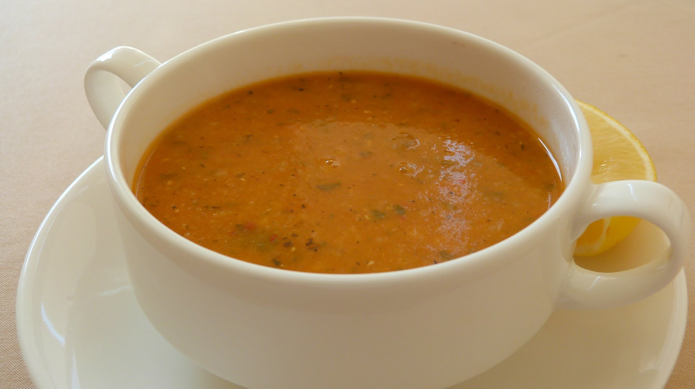

Ezogelin Çorbası

½ su bardağı bulgur
½ su bardağı pirinç
1 adet orta boy soğan
2 diş sarımsak
1 dolu yemek kaşığı tereyağı
7 su bardağı su
Tuz
Karabiber
Meyanesi için Malzemeler
2 yemek kaşığı un
1 yemek kaşığı salça
1 tutam nane
1 tutam kırmızı toz biber
1 tutam pul biber
2 yemek kaşığı sıvıyağ
2 su bardağı su veya et suyu
Soğan ve sarımsağı yemeklik doğrayın.
Tereyağını tencereye alıp eritin önce soğan sonra sarımsağı pembeleşinceye kadar kavurun.
Tencereye mercimek, bulgur ve pirinci ekleyerek 1-2 tur daha karıştırın, suyu ekleyip kaynamaya bırakın.
Başka bir tencereye sıvı yağı ekleyin kızınca unu ekleyip renk alıncaya kadar kavurun. Tuz ve karabiber ekleyin.
Salçayı ekleyip bir dakika daha kavun, baharatları ve sıcak suyu ekleyin kıvam alana dek karıştırın.
Diğer tenceredeki bakliyatlar pişince un kavurduğunuz tencereyle birleştirip 1 taşım kaynatıp ocaktan alın.
Dilerseniz üzerine biberli yağ gezdirerek servis edebilirsiniz.